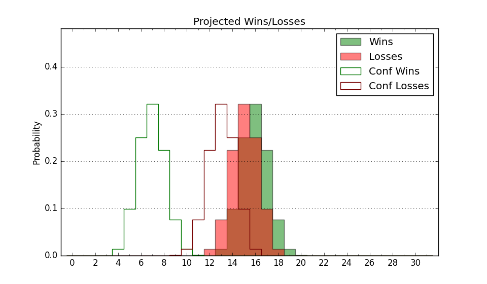

| Home | Game Probabilities | Conferences | Preseason Predictions | Odds Charts | NCAA Tournament |
| City: | Evanston, Illinois | |
| Conference: | Big Ten (15th)
| |
| Record: | 4-9 (Conf) 13-11 (Overall) | |
| Ratings: | Comp.: 16.5 (55th) Net: 16.4 (55th) Off: 114.1 (63rd) Def: 97.7 (56th) SoR: 3.0 (79th) |
| Remaining | ||||||
|---|---|---|---|---|---|---|
| Date | Opponent | Win Prob | Pred. | |||
| 2/11 | @ Oregon (40) | 27.0% | L 68-75 | |||
| 2/16 | Nebraska (48) | 60.7% | W 70-67 | |||
| 2/20 | @ Ohio St. (20) | 17.7% | L 65-75 | |||
| 2/25 | @ Minnesota (98) | 56.8% | W 65-63 | |||
| 2/28 | Iowa (63) | 69.1% | W 80-74 | |||
| 3/3 | UCLA (28) | 46.3% | L 65-66 | |||
| 3/8 | @ Maryland (15) | 15.7% | L 65-76 | |||
| Previous | Game Score | |||||
| Date | Opponent | Win Prob | Result | Off | Def | Net |
| 11/4 | Lehigh (277) | 96.5% | W 90-46 | 7.9 | 19.8 | 27.7 |
| 11/9 | @Dayton (84) | 48.0% | L 66-71 | -11.7 | 5.5 | -6.2 |
| 11/12 | Illinois Chicago (123) | 86.2% | W 83-74 | -1.7 | -2.7 | -4.3 |
| 11/15 | Eastern Illinois (338) | 98.2% | W 67-58 | -16.5 | -3.9 | -20.4 |
| 11/19 | Montana St. (185) | 91.7% | W 72-69 | -6.6 | -17.9 | -24.4 |
| 11/22 | Pepperdine (205) | 93.0% | W 68-50 | -17.5 | 18.8 | 1.3 |
| 11/28 | (N) Butler (73) | 58.0% | L 69-71 | -6.6 | 1.1 | -5.6 |
| 11/29 | (N) UNLV (96) | 70.4% | W 66-61 | -5.0 | 5.7 | 0.7 |
| 12/3 | @Iowa (63) | 39.7% | L 79-80 | 3.3 | 1.6 | 4.9 |
| 12/6 | Illinois (11) | 32.9% | W 70-66 | -12.0 | 22.5 | 10.5 |
| 12/15 | (N) Georgia Tech (116) | 76.0% | W 71-60 | -7.0 | 12.1 | 5.1 |
| 12/21 | DePaul (110) | 85.0% | W 84-64 | 1.9 | 3.9 | 5.7 |
| 12/29 | Northeastern (210) | 93.4% | W 85-60 | 14.5 | -0.5 | 14.0 |
| 1/2 | @Penn St. (61) | 39.3% | L 80-84 | 9.5 | -8.2 | 1.3 |
| 1/5 | @Purdue (10) | 12.4% | L 61-79 | -6.8 | -1.7 | -8.5 |
| 1/12 | Michigan St. (21) | 42.5% | L 68-78 | -5.1 | -9.7 | -14.9 |
| 1/16 | Maryland (15) | 38.9% | W 76-74 | 2.0 | 9.8 | 11.8 |
| 1/19 | @Michigan (19) | 17.5% | L 76-80 | 4.8 | 9.2 | 14.0 |
| 1/22 | Indiana (60) | 68.6% | W 79-70 | 13.2 | -0.8 | 12.4 |
| 1/26 | @Illinois (11) | 12.6% | L 74-83 | 12.1 | -0.7 | 11.4 |
| 1/29 | Rutgers (72) | 71.1% | L 72-79 | -2.7 | -22.6 | -25.3 |
| 2/1 | Wisconsin (16) | 39.1% | L 69-75 | 6.2 | -11.0 | -4.8 |
| 2/4 | USC (58) | 67.9% | W 77-75 | 10.3 | -14.5 | -4.2 |
| 2/8 | @Washington (92) | 54.7% | L 71-76 | 7.1 | -11.1 | -4.0 |
| Stats & Trends | |||||
|---|---|---|---|---|---|
| Current | Day | Week | Month | Season | |
| Composite | 16.5 | -0.2 | -0.4 | -1.3 | -5.1 |
| Comp Rank | 55 | -1 | -3 | -6 | -35 |
| Net Efficiency | 16.4 | -0.1 | -0.4 | -0.8 | -- |
| Net Rank | 55 | -1 | -3 | -4 | -- |
| Off Efficiency | 114.1 | +0.3 | +0.8 | +2.9 | -- |
| Off Rank | 63 | -- | +5 | +24 | -- |
| Def Efficiency | 97.7 | -0.4 | -1.2 | -3.7 | -- |
| Def Rank | 56 | -4 | -11 | -25 | -- |
| SoS Rank | 27 | +1 | -3 | +26 | -- |
| Exp. Wins | 15.9 | -0.6 | -0.4 | -1.8 | -5.1 |
| Exp. Conf Wins | 6.9 | -0.6 | -0.4 | -1.8 | -4.9 |
| Conf Champ Prob | 0.0 | -- | -- | -0.1 | -13.8 |

| Advanced Stats | ||
|---|---|---|
| Stat | Value | Rank |
| Off Eff FG % | 0.529 | 114 |
| Off Ast Ratio | 0.170 | 48 |
| Off ORB% | 0.318 | 94 |
| Off TO Rate | 0.116 | 14 |
| Off FT Ratio | 0.364 | 93 |
| Def Eff FG % | 0.476 | 76 |
| Def Ast Ratio | 0.143 | 141 |
| Def ORB% | 0.273 | 133 |
| Def TO Rate | 0.189 | 20 |
| Def FT Ratio | 0.331 | 177 |